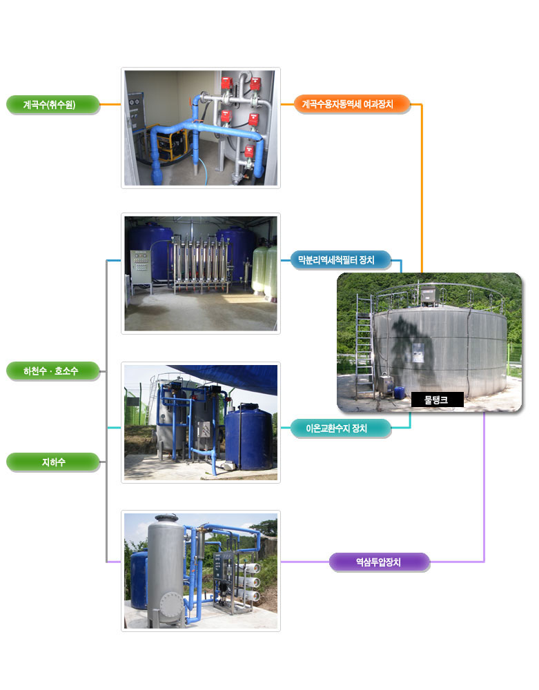
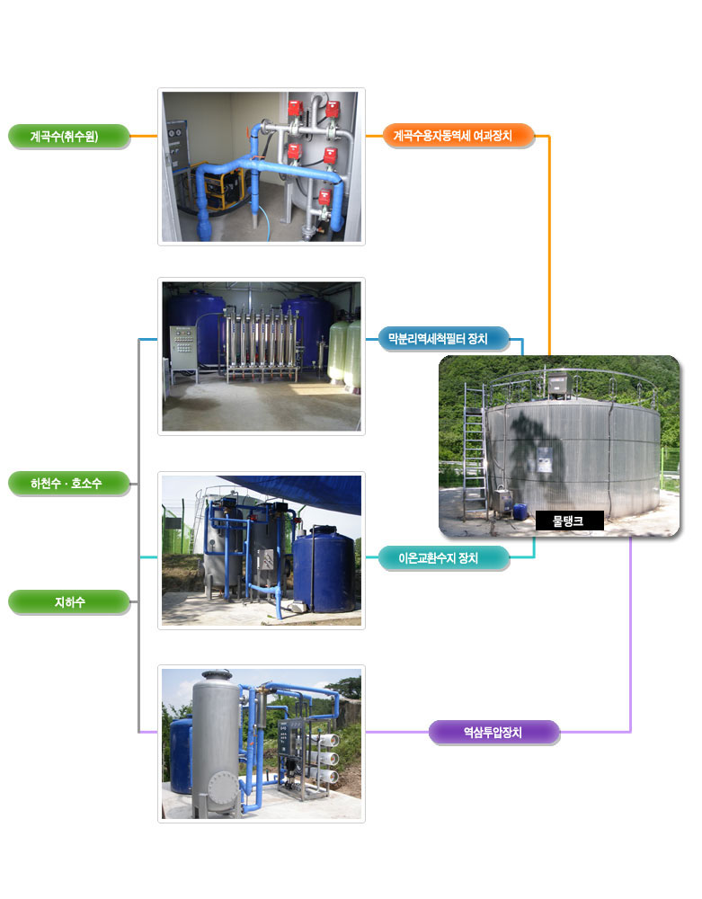

GREENCLEANER
Green cleaner is eco-friend like sterilized antiseptic solution,CLO2,
which is easily decomposed by the light.
It makes you to use tap water more easily and safer.
PRODUCT

Green cleaner is eco-friend like sterilized antiseptic solution,CLO2,
which is easily decomposed by the light.
It makes you to use tap water more easily and safer.
